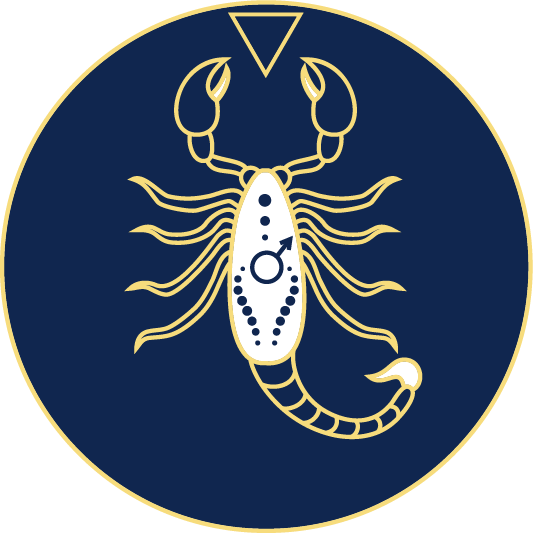
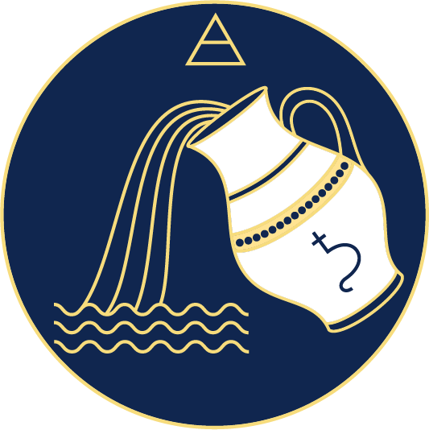

Vous pouvez consulter le tableau ci-dessous pour découvrir les signes astrologiques, leurs dates et leurs principales caractéristiques.
Cliquez sur chacun des signes pour en savoir plus
| Signe | Dates | Caractéristiques principales | Traits associés |
|---|---|---|---|
| Bélier | 21 mars – 19 avril | Énergique, courageux | Leadership, impulsivité |
| Taureau | 20 avril – 20 mai | Stable, patient | Persévérance, sensualité |
| Gémeaux | 21 mai – 20 juin | Communicatif, curieux | Adaptabilité, nervosité |
| Cancer | 21 juin – 22 juillet | Émotif, protecteur | Sensibilité, intuition |
| Lion | 23 juillet – 22 août | Confiant, expressif | Charisme, fierté |
| Vierge | 23 août – 22 septembre | Analytique, organisé | Rigueur, perfectionnisme |
| Balance | 23 septembre – 22 octobre | Diplomate, équilibré | Charme, indécision |
| Scorpion | 23 octobre – 21 novembre | Intense, mystérieux | Passion, détermination |
| Sagittaire | 22 novembre – 21 décembre | Aventurier, optimiste | Liberté, franchise |
| Capricorne | 22 décembre – 19 janvier | Ambitieux, discipliné | Responsabilité, prudence |
| Verseau | 20 janvier – 18 février | Original, indépendant | Innovation, imprévisibilité |
| Poissons | 19 février – 20 mars | Sensible, rêveur | Empathie, imagination |